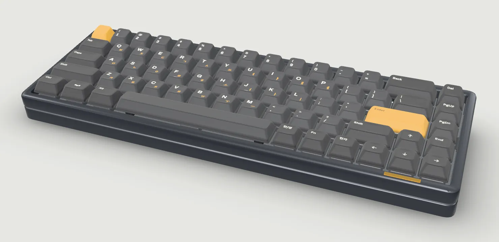
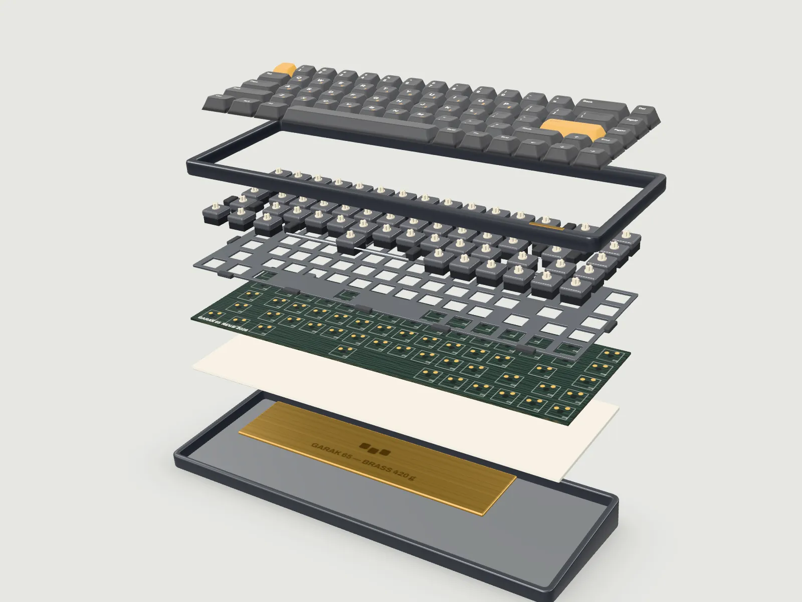

GARAK 65 알루미늄 65% 키보드
손가락이
내는 가락.
지금 쓰는 키보드로 화면 속 키보드를 쳐 보세요. 같은 자리의 키가 함께 눌립니다.
완성품 398,000원, 11월 30일까지
여덟 겹으로 쌓았습니다
스크롤하면 위에서부터 한 겹씩 떼어 보여 드립니다.
-
두께 1.5mm PBT에 염료승화로 글자를 입혔습니다. 영문 옆에 두벌식 자모도 넣었고, 오래 써도 번들거리지 않습니다.
행마다 높이와 기울기가 다른 원통형 키캡
-
6063 알루미늄 덩어리를 깎아 만든 테두리입니다. 앞 베젤 오른쪽에 황동 명판을 박았습니다.
베젤 7mm, 비드블라스트 후 아노다이징
-
5핀 핫스왑 소켓이라 납땜 없이 뽑고 꽂습니다. 고요, 마루, 또각 가운데 하나를 고릅니다.
긴 키 4개에는 스태빌라이저, 철사에 윤활
-
1.5mm 알루미늄 판을 실리콘 가스켓 12개가 케이스에서 띄워 둡니다. 바닥을 칠 때 충격이 손끝으로 덜 돌아옵니다.
가스켓 마운트, 판과 케이스 사이 금속 접점 없음
-
1.6mm 핫스왑 기판입니다. QMK와 VIA로 키 배치를 바꿀 수 있고, 입력은 1초에 1000번 보냅니다.
USB-C, 1000Hz
-
3.4mm 폴리우레탄 폼이 케이스 속 빈 공간을 채워 통울림을 줄입니다.
기판 아래 한 장, 떼어 낼 수 있음
-
420g 황동 판을 하판 안쪽에 눕혔습니다. 책상 위에서 밀리지 않고, 소리가 낮게 가라앉습니다.
헤어라인 마감, 각인 포함
-
6.5° 기울기를 케이스에 깎아 넣었습니다. 접는 다리 없이도 손목이 편한 각도입니다.
앞 높이 22mm, 바닥 고무발 4개
1 / 8

다시 한 덩어리. 전부 합쳐 1.9kg입니다.
스위치는 세 가지
누르는 느낌과 소리가 다릅니다. 하나를 고르면 이 페이지의 키보드도 그 스위치로 바뀝니다.
- 작동 압력
- 45gf
- 작동 지점
- 2.0mm
- 바닥 압력
- 58gf
- 전체 이동
- 4.0mm
소리는 브라우저에서 합성합니다. 실제 녹음과는 조금 다릅니다.
네 가지 색
케이스는 아노다이징으로, 키캡은 케이스에 맞춰 따로 염색했습니다.
직접 쳐 보기
문장을 따라 치면 속도와 정확도를 잽니다. 아래 키보드도 같이 눌립니다.
입력을 시작하면 시간이 갑니다.
내 가락 키를 누른 간격
사양
| 배열 | 65%, 68키. 영문과 두벌식 한글 각인 |
|---|---|
| 크기 | 319 × 112mm, 높이 앞 22mm, 뒤 35mm |
| 무게 | 완성품 약 1.9kg (황동 무게추 420g 포함) |
| 타건 각도 | 6.5° |
| 케이스 | 6063 알루미늄 CNC 가공, 아노다이징 |
| 마운트 | 가스켓 마운트, 실리콘 가스켓 12개 |
| 보강판 | 알루미늄 1.5mm |
| 기판 | 1.6mm 핫스왑(5핀), QMK와 VIA 지원 |
| 연결 | USB-C 유선, 1000Hz |
| 키캡 | PBT 1.5mm, 염료승화 각인 |
| 스위치 | 고요(리니어), 마루(택타일), 또각(클릭) 중 하나. 완성품만 |
| 상자 구성 | 키보드, USB-C 케이블 1.5m, 키캡 리무버, 스위치 리무버, 여분 가스켓 4개 |
1차 예약
1차 생산은 300대입니다. 예약할 때는 돈을 내지 않고, 결제는 출고 2주 전에 메일로 안내합니다.
- 11.03예약 시작
- 11.30예약 마감지금 예약을 받고 있습니다
- 2027.01생산
- 2027.022월 말부터 차례로 출고
예약했습니다
예약 번호GR65-1-0000
- 구성
- 색
- 스위치
- 합계
- 원, 출고 2주 전 결제
데모라서 아무 정보도 전송되지 않았습니다. 이 화면은 이 브라우저에만 남습니다.
자주 묻는 것
맥에서도 쓸 수 있나요?
네. 꽂으면 바로 됩니다. 맥용 키 배치는 VIA에서 바꾸면 되고, 같은 자리에 끼울 Cmd, Opt 키캡을 상자에 함께 넣어 드립니다.
한글 각인 없는 키캡도 있나요?
1차에는 한글 각인 키캡만 만듭니다. 가진 키캡을 쓰고 싶다면 베어본을 고르세요.
스위치를 나중에 바꿀 수 있나요?
핫스왑 소켓이라 상자에 든 리무버로 뽑고 꽂으면 됩니다. MX 규격 3핀, 5핀 스위치가 모두 맞습니다.
무선은 안 되나요?
가락 65는 유선만 지원합니다. 배터리 자리에 황동 무게추를 넣는 쪽을 골랐습니다.
예약을 취소할 수 있나요?
결제 안내 메일을 받기 전까지 언제든 취소할 수 있습니다. 예약할 때 돈을 내지 않으니 돌려받을 금액도 없습니다.
고장 나면 어떻게 하나요?
받은 날부터 1년 동안 기판과 케이스 결함은 무상으로 고쳐 드립니다. 키캡과 스위치는 닳는 부품이라 빠집니다.
페이지에서 나는 소리가 실제 소리인가요?
아닙니다. 브라우저에서 잡음과 짧은 음을 섞어 만든 소리입니다. 실제 소리는 책상과 방에 따라서도 달라집니다.